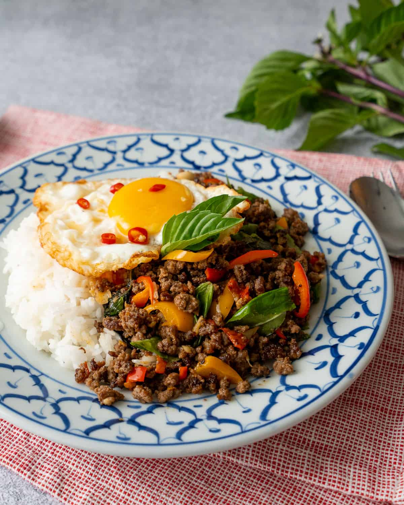

Pad-Kra-Pow

In Thailand you can find it cooked to order from a street food vendor, served in a fancy restaurant, or provided in a box ready-to-eat from a grocery store. Anywhere you go in Thailand, you’re never far from a pad gaprao. It really IS the food of the people! Pad kra pao literally means "holy basil stir fry," so the holy basil is the key ingredient here. This recipe uses ground beef, but can be made with any kind of protein. Of all Thai stir fries, this is one of the easiest to make, and a great weeknight recipe as minimal prep is required. And it's gluten free!